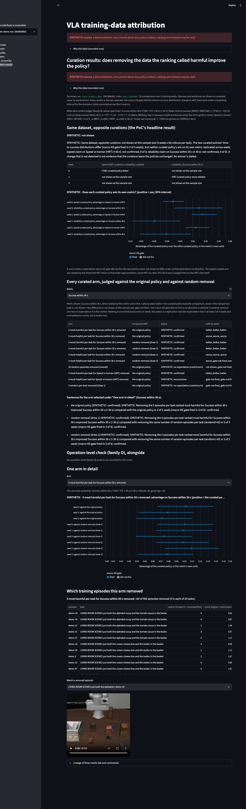

A new dashboard page that shows whether removing the training recordings the ranking called harmful actually improved the retrained policy, including the spec's headline “same dataset, opposite curations” result. It runs today on a synthetic demo, where the honest headline reads “not shown”.
The project tries to find which training recordings make a robot policy worse, and then proves it by removing them, retraining, and checking whether the policy got better. Those retraining tests (called Round A) will run on the GPU server, but the dashboard had no page for their results. This feature adds that page. It states, in careful words, whether each removal helped, and it shows the spec's headline experiment: train one policy on data curated for speed and another on data curated for reliability, and see whether each beats the other on its own measure.
Since the server has not run yet, the page is demonstrated on invented (synthetic) data, and every screen says so. On that data the headline reads “not shown”: the two policies did differ, but neither one's win repeated across the three training seeds. That is a demonstration that the wording is honest, not a finding about any real robot.
What is verified: the page shows exactly what the recorded results say, results built from the server's own commands show up without code changes, and the server's job counts did not change. What is unknown: whether any real curated policy wins. That needs the GPU server.
Read this first. Nothing in the Demo section is a result about a real policy. The page's numbers come from a SYNTHETIC Round A: real code, invented robot attempts with planted effects written in words on every run. Where this report quotes those numbers it says so. The demo policies differed in 3 of 3 seeds, but neither curated policy's win replicated, and this report does not turn that into a conclusion about the idea.
Every technical term and label used on this page and the story pages. Each is also explained where it first appears.
| Term | Plain meaning |
|---|---|
| The robot-learning setting | |
| Episode, demonstration, recording | One recording of a person guiding a simulated robot arm through a task once. Same thing here. |
| LIBERO | A benchmark of simulated household-style robot tasks with recorded demonstrations. Our training pool is 960 candidate recordings over 20 tasks. |
| Policy; SmolVLA | A policy is a trained model that decides what the robot does next from camera images and an instruction. SmolVLA is the compact open-source one we train. |
| Rollout; seed | A rollout is one attempt by a trained policy at a task, recorded and judged. A seed is one random starting point for training; several seeds show how much of a result is luck. |
| Lineage store; MLflow | The record of every step the pipeline ran, each as a run with its files and a checksum (a fingerprint that changes if the file is altered). MLflow is the open-source tool that holds it. The dashboard reads only from here. |
| Curation and the removal tests | |
| Attribution ranking; harmful / helpful | A score per training recording saying how much it pushed a measured outcome (for example finishing within 30 s) up or down. “Most harmful” means the highest-scored recordings for making that outcome worse. |
| Curation; arm | Removing recordings from the training set and retraining. An arm is one such variant, e.g. “the 5 recordings per task ranked most harmful for Success within 30 s, removed”. |
| Original policy; random removal | The original policy is trained on everything. Random removal drops the same number of recordings chosen by chance: the control the spec requires a curated arm to beat (§2.6). |
| Round A; Round B | Round A retrains on v3/candidate (the training pool with 91 deliberately corrupted recordings) with curated arms and judges them. Round B retrains on removals of planted corruptions or discovered clusters. This page shows Round A. |
| Same dataset, opposite curations | The spec's headline experiment: curate once for speed and once for reliability, retrain both, and show each wins on its own metric (§4.5, p. 11). Called the headline below. |
| Measures and the verdict | |
| Success within 30 s; F(30) | Chance that an attempt finishes the task within 30 seconds (the metric's “reliability” form). |
| Speed vs human; HRT | Robot time relative to human time on the same task, with a 60 s cap. Ranked in the Round A chain by a straight-line approximation of it (§4.3, p. 10) and judged on the real ratio. |
| τ (tau) | The time cap behind a number, in seconds. Every sentence on the page names it. |
| Macro-KS gate | A test asking first: did the distribution of times-to-success change at all between two policies? If not, no direction is claimed (§4.4). |
| Confidence interval (CI); bootstrap; Holm | A 95% range for a difference, obtained by resampling the attempts (bootstrap). Holm is a standard way to tighten the threshold when several metrics are tested together. |
| Family W; family O | W is the whole-task time-to-success family used for the headline. O is the operation-level check (time per sub-operation), shown in its own section here and kept out of the headline. |
| Our labels for results | |
| Calls T, C, 0, g | The per-seed reading of one comparison: T = the curated (treated) policy better, C = the comparison policy better, 0 = no direction shown, g = the gate did not fire so no direction is claimed. |
| confirmed / refuted / not confirmed / inconclusive / no expectation | Across-seed status of one arm and metric. Confirmed: the expected direction in at least ⌈2n/3⌉ of n seeds (2 of 3) and none the other way. Refuted: the opposite in at least 2 of 3. Inconclusive: the gate fired in fewer than 2 of 3 seeds. Not confirmed: anything else. No expectation: random-removal controls. |
| shown / partly shown / contradicted / not shown / inconclusive | The headline state. Shown: both curated policies win on their own metric (confirmed). Partly shown: exactly one is confirmed and none refuted. Contradicted: either is refuted. Not shown: the gate fired in at least 2 of 3 seeds but neither claim replicated. Inconclusive: the gate fired in fewer than 2 of 3 seeds. “Not shown” never means “no effect”. |
| SYNTHETIC / SMOKE / REAL | Provenance label computed from the recorded runs. SYNTHETIC: invented data to test the screens. SMOKE: real code on a toy-scale run. REAL: genuine server results. It shows as a banner and cannot be switched off. |
| Inferred | Our reasoning, not stated in the spec or a paper. The across-seed and headline rules are inferred and labelled so in the code. |
| Drop-in proof | A test that results built from the server's own commands appear in the page with no code change. |
| Forest plot | A chart with one row per comparison: a dot for the estimate and a line for its interval, against a zero line. |
| AC; § | AC = acceptance criterion, a pass/fail check written before building. § = a section of the project spec (the PoC document), with its page. |
vlapoc/verdict.py; ATHENA §3.2/§4.2 grounds the per-task top-k already used by server_pipeline.py. This feature reads and words recorded verdicts.vlapoc.confirm.status_of (the across-seed rule), the bounded-sentence pattern of planted_arms, results.py, Altair (already installed). Considered and not used: the forestplot package (a new dependency, static image, no tooltips) and the MLflow UI run comparison (verdict intervals live inside files, no across-seed rule). The analyzer's audit found nothing off the shelf for replication-status wording or for “the Round A chain of this score run”.mark_rule; the --demo disk check is now a warning. The across-seed rule, headline rule and gate-2/3 boundary are inferred (owner questions below).Open Curation results in the dashboard sidebar. Top to bottom (a screenshot of the demo follows):

The spec's headline asks one yes/no question, but three seeds of noisy retraining rarely give a clean yes. So the page has five states and states each in words. The decisive rule is this: first the macro-KS gate (did the two curated policies' time-to-success change at all?), then a direction only where the gate fired, then replication (at least 2 of 3 seeds, none contradicting).
| State | When | Sentence says |
|---|---|---|
| shown | both claims confirmed | each curated policy wins on its own metric |
| partly shown | exactly one confirmed, none refuted | only one policy is shown to win its own metric |
| contradicted | either claim refuted | at least one curated policy lost on its own metric in at least 2 of 3 seeds |
| not shown | gate fired in at least 2 of 3 seeds, neither claim confirmed or refuted | the policies differ, but no win replicated; no winner is stated |
| inconclusive | gate fired in fewer than 2 of 3 seeds | no direction is claimed for either policy; no winner is stated |
This is SYNTHETIC data, not a finding. In the demo, the two curated policies' time-to-success distributions differed in 3 of 3 seeds (gate fired 3 of 3), but neither curated policy's win on its own metric replicated: the speed claim was backed in 0 of 3 seeds (one seed went the other way), and so was the reliability claim (one seed the other way). The demo's invented policies were planted as “HRT-curated: faster but more variable” and “F30-curated: more reliable”, but in the pilots the policy that completes more attempts also won on the speed measure (measured: HRT difference +0.058, Holm p 0.033 in that policy's favour). The reason, that timeouts count at 60 s in both, is inferred. The builder stopped tuning rather than engineer a clean win, so the demo shows the discipline, not a victory. The other four states are covered by planted test cases (S1) and the gate-0/3 card by a scratch copy of the store (S4).
The first version of the rule got this wrong: it called the same data “inconclusive” although the gate had fired 3 of 3, contradicting “not confirmed” in the table on the same page (analyzer finding B1).
Family W judges the whole task's time-to-success. Family O judges time at the level of single operations. The server's Round A records 21 operation-level comparisons against the original policy (vs_base). The first build quietly dropped them from the page (analyzer finding B3). Now the page has its own section, Operation-level check (family O), alongside, with each recorded row's arm, metric, comparison, status, calls by seed, whether the gate fired, and the sentence verbatim, plus a caption naming the functional. O rows never enter the headline, the W table or the plots. On the demo, which records no O verdicts, the section reads “No operation-level (family O) verdicts are recorded for this chain.” On the server-shaped drop-in chain it shows 7 O rows (metric rmst60_op_cap, “operation RMST, capped (τ 60 s)”) beside the 16 W rows.
No new jobs. The page only reads what the chain already records. Counts are unchanged and checked by scripts/verify_runbook.py:
| Run | Jobs | Trainings | Where checked |
|---|---|---|---|
| Round A on v3/candidate (this page's data) | 116 | 24 | verify_runbook 10/10; --step4 1.5 “would submit 116 jobs” |
| Round B, planted data | 129 | 33 | verify_runbook count check passes |
| Round B, discovered clusters | 21 | 6 | verify_runbook count check passes |
The only chain-side code change is words: vlapoc/step4.py adds status and sentence columns (last, old columns byte-identical) when it writes the step4-summary run. The Round A step4-summary command is unchanged in form (check 1.5, and a diff of the dry run before and after S1 differs only in the chain's git sha). The server-run runbook stays valid. After Round A finishes, this page is the place to read it: --lineage-root pointed at the server's store.
Every arm and metric gets a status and a bounded sentence; the headline has five states. The analyzer made “not shown” a separate state from “inconclusive”.
Loaders find the chain, check file fingerprints, and recover all 100 removed episodes per arm (the stored tag held 78).
48 verdicts and 24 retrainings' worth of records through the real code; the invented policies do not trade off, so the demo honestly says “not shown”.
The sixth dashboard page: headline card, per-seed table, forest plot, arm table, family O, removed episodes with video. Plots 222 and 306 px tall in real Chrome.
Server commands through the stage CLI render with no code change: 69 verdicts, 23 summary rows; re-tagged to REAL, the banners disappear.
Everything in this section is SYNTHETIC except the dry-run counts, the checks, and the recording and task names. No real attribution result exists yet.
The recorded sentence (check 3.3), word for word:
SYNTHETIC: Same dataset, opposite curations: not shown at this sample size (3 seeds x 50 rollouts per task).
The two curated policies' time-to-success distributions differ (macro-KS gate fired in 3 of 3 seeds),
but neither curated policy's win on its own metric replicated across seeds (speed claim on Speed vs
human (HRT) (τ 60 s): not confirmed, 0 of 3; reliability claim on Success within 30 s (τ 30 s): not
confirmed, 0 of 3). A change that is not detected is not evidence that the curations leave the
policies unchanged. No winner is stated.Statuses for “Success within 30 s” on the demo, from the page's arm table (screenshot above). The first three rows are removal of the 5 episodes per task ranked most harmful.
| Arm | Compared with | Status | Calls by seed |
|---|---|---|---|
| most harmful removed (F30 ranking) | the original policy | SYNTHETIC: confirmed | better, better, better |
| most harmful removed (F30 ranking) | random removal (draws 1 and 2) | SYNTHETIC: confirmed (both) | better, better, better |
| most helpful removed (F30 ranking) | the original policy | SYNTHETIC: confirmed | worse, worse, worse |
| 20 random episodes removed | the original policy | SYNTHETIC: no expectation (control arm) | not shown, gate not fired, … |
| most harmful for speed removed (HRT ranking), judged on Success within 30 s | the original policy | SYNTHETIC: confirmed | better, better, better |
| most helpful for speed removed (HRT ranking), judged on Success within 30 s | the original policy | SYNTHETIC: inconclusive (planted weak) | gate not fired, gate not fired, … |
Source: the page screenshot and S3 check 3.3 (“both curated-for-F30 and curated-for-HRT arms are confirmed against base and against both random draws; help-F30 confirmed (worse); help-HRT inconclusive; random arms no expectation”). “Confirmed” here only says the invented policy behaves as the generator planted it.
From the repo root. The first command is the one that serves the page; then pick Curation results in the sidebar.
.venv/bin/streamlit run dashboard/app.py -- --lineage-root data/lineage_demo --scores attribute-demo-ensThe checks (outputs as the analyzer reproduced them in round 2, kept in artifacts/):
.venv/bin/python scripts/verify_training_attribution.py --step4 # 20/20, incl. 1.2 six headline cases, 1.5 "would submit 116 jobs"
.venv/bin/python scripts/verify_dashboard.py --curation # pass=True (23/23) headline 'SYNTHETIC: not shown'
.venv/bin/python scripts/verify_dashboard.py --dropin # pass=True (7/7) 69 verdicts, 23 summary rows (7 family O)
.venv/bin/python scripts/verify_dashboard.py --render # pass=True (4/4) 'Curation results': [[592, 222], [720, 306]]
.venv/bin/python scripts/verify_dashboard.py --demo # 6/6 after the refactor (6.5 now warns on low free disk)
.venv/bin/python scripts/verify_runbook.py # runbook: pass=True (10/10)Run them on a committed tree (the stage commands refuse a dirty source tree). They rewrite a few tracked artifacts of earlier features (run ids, timings); restore those with git checkout. The demo store is rebuilt with .venv/bin/python scripts/dashboard_demo.py build --with-smoke --force (881 s measured).
The analyzer re-ran everything itself in round 2 on HEAD adc6eee; the refactorer then re-ran the same set before and after its edits (behaviour identical, tracked-file churn restored).
| Check | Result |
|---|---|
--step4 / --curation / --app / --render / --dropin | 20/20, 23/23, 11/11, 4/4, 7/7 |
--results --clusters --planted --discrepancy --round-b --planted-arms | 12/12, 14/14, 7/7, 10/10, 13/13, 8/8 |
verify_attribution.py; training-attribution --blind --functionals --recovery --names --groups --integration --pipeline | 32/32; all pass (18/18, 11/11, 13/13, 9/9, 12/12, 9 PASS / 0 FAIL) |
verify_runbook.py | 10/10 (check 8.5 re-anchored; counts 116/24, 129/33, 21/6) |
--demo | 5/6 in the analyzer's round (6.5 failed on free disk only, 18.8 GiB; store 17 MiB, cache 19 MiB); 6/6 after the refactor turned that into a warning |
Real store data/lineage/mlflow.db sha256 | 306af4123fda7e63…bde79, unchanged |
Not verified, said plainly: the page has never rendered a real Round A (it does not exist yet); the drop-in proves the shape of server output on a toy fixture, not its numbers. The page checks run on the demo and scratch copies only. The first real render and the first real headline are for the server day. The 1.9 s first-load time is on the demo store (111 runs walked); the server walks about 69 verdicts' worth of runs per summary (inferred from the plan, to be measured).
not shown state; inconclusive only when the gate fired in fewer than ⌈2n/3⌉ seeds. The planner revised the plan; the executor changed step4.headline, added the sixth fixture case (and a 2-of-3 boundary case) and rebuilt the demo.verify_runbook.py check 8.5 compared the working-tree diff of CLAUDE.md with a recorded diffstat; the owner's commit bad0241 committed exactly that diff, so the check failed with no agent change involved. Fix: it now asserts no commit after the base touches CLAUDE.md. CLAUDE.md was not edited. Result: 10/10.KeyError: 'nan', fixed by row_keys.--step4 no longer rewrites another feature's tracked artifact (N3); removed-episode labels and the sentence list were made readable (N4).search_runs); the forest plot on Altair built-ins (the forestplot package would add a dependency and lose tooltips); the demo's hand-parsing of the dry run (stage.py and server_pipeline.py build their parsers inside main(), so none is exposed). Replaced by the refactor: the duplicate treated_advantage (now one copy, imported by planted_arms), the regex in condensed_reasons (now reads structured reason_items), and the one-line functional_note_text wrapper (now st.caption).--demo 6.5 disk check and the text of check 4.2). One slip, reported: a git add -N . briefly marked data.zip intent-to-add and was undone at once with git rm --cached; the file was never opened, moved or committed.| Divergence | Why | Where it is visible |
|---|---|---|
The demo ranks each task by the all-rollout column harm_<m>, not __same_task | The demo's invented rollouts cover only 2 of 20 tasks, so the per-task columns are empty and the select step refuses (measured). The server ranks per task, and the drop-in exercises that column. | Page caption “rollouts: all”; the select run's recorded metric; execution log S3 |
| The demo shows only the not-shown state | Tuning invented data until it shows a win would misrepresent the page. The page has no state-dependent branch; the other states are covered by the S1 fixture, and gate-0/3 by a scratch copy (4.7a). | Headline card; S1 check 1.2; S4 check 4.7 |
The forest plot uses mark_rule + mark_point, not mark_errorbar | The layered errorbar chart drew a 22 to 74 px plot area in Chrome (measured); rules and points measure 222 and 306 px. | verify_dashboard.py --render 5.10a |
The --demo free-disk check is now a warning | It tracked the laptop's free space (passed at 20.25 GiB, failed at 17 to 19 GiB), not the dashboard. The 20 GiB figure is the server-run runbook's rule for the server scratch disk. Store plus cache under 2 GiB remains the check. | --demo 6/6 with a [WARN] 6.5 line |
Also recorded, not divergences from the plan: the sentence wording resolves a plan self-contradiction (the plan asked for “no effect” while banning the phrase); step4.treated_advantage was first a copy and is now the only copy.
rule parameter and can be changed.claude_md_base_commit.txt to the owner's commit or have the check ignore commits without the Claude co-author trailer.__same_task like the server.The brief listed other dashboard gaps, deliberately not built here and not blocking the headline:
vlapoc/clusters.py).Also not built: global curation arms (gharm-*; they would appear in their own group if ever recorded), and any correction across arms and seeds (the across-seed rule is a replication rule, not a test; §4.4 asks for correction across metrics only, which the verdict already does with Holm).
brief.md, then the “Headline” part of plan.md: the question and the rule for each state.vlapoc/step4.py: where the words come from. Docstring (§9.1 Step 4, §4.5), then call (T/C/0/g), status_of_calls, sentence_of, headline, treated_advantage, summarize, summary_run.vlapoc/results.py, lower half: curation_runs, removed_episodes, provenance and reason_items.dashboard/common.py: curation_of, curation_verdicts, removed_of, banner, condensed_reasons.dashboard/views/curation.py: the page in drawing order; helpers arm_label, control_label, row_keys, verdict_index, forest. dashboard/app.py registers it.scripts/dashboard_demo.py::round_a: how the SYNTHETIC Round A is built from the dry run.verify_dashboard.py --curation, --dropin, --demo, --render; verify_training_attribution.py --step4; verify_runbook.py check 8.5.vlapoc/planted_arms.py::statuses: the Round B wording, which now shares call, ALPHA and treated_advantage with step4.--lineage-root at the server's store. First real render is the unchecked step.changelog.md entries add dated lines here.